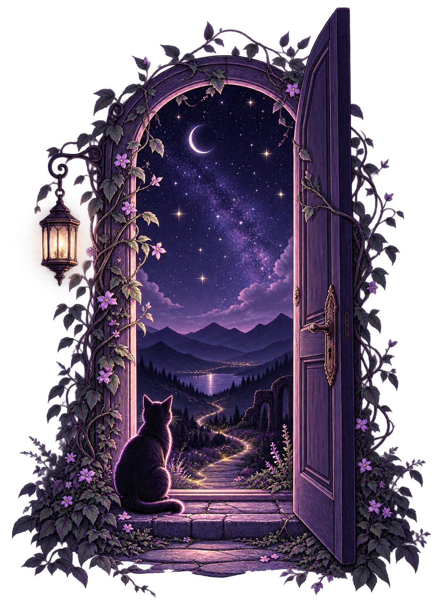

Textos
Palavras sobre perdas, saudades, dias comuns e tudo o que eu ainda estou aprendendo a sentir.
UM NOVO COMEÇO
Um lugar para escrever sobre aquilo que termina - e sobre tudo o que continua.

Ainda não há muita coisa por aqui. Eu também acabei de chegar.
Este espaço nasceu para guardar palavras, memórias, recomeços e tudo aquilo que continua existindo mesmo depois que alguma coisa termina.
Palavras sobre perdas, saudades, dias comuns e tudo o que eu ainda estou aprendendo a sentir.
Pequenas reconstruções, novos caminhos e a vida aprendendo a existir de outro jeito.
Histórias, fotografias e memórias dos seres que estiveram comigo em praticamente tudo.